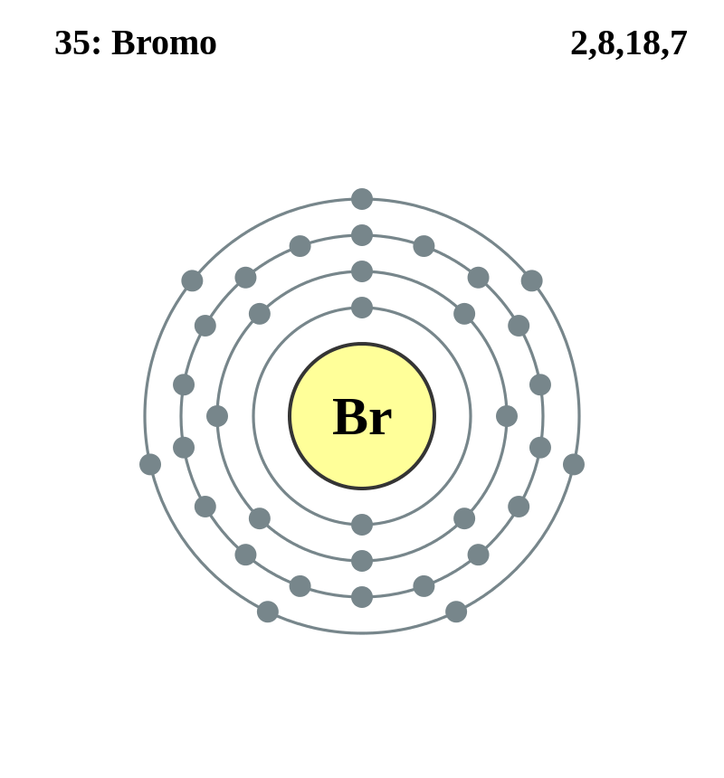

|
|
||
|
Bromo El bromo es un elemento líquido no metálico. Es un líquido denso de color marrón rojizo que produce un vapor rojo con un olor característico y desagradable. El vapor irrita los ojos y la garganta, y al exponerlo a la piel produce úlceras dolorosas. El bromo reacciona con muchos elementos, es fácilmente soluble en agua o sulfuro de carbono y se puede extraer a partir de salmueras y agua de mar. El bromo se utiliza en pesticidas para fumigación, agentes a prueba de fuego, compuestos de purificación de agua, tintes, medicinas, soluciones antisépticas y sustancias químicas para fotografía. Los compuestos orgánicos e inorgánicos de bromo también tienen aplicaciones importantes en muchas industrias |
 |
DATOS Número Atómico: 35 Peso Atómico: 79.90 Electronegatividad: 2,96 Configuración Electrónica: 3d104s24p5 Estados de Oxidación: ±1,+5 No. de Electrones de Valencia: 7 |